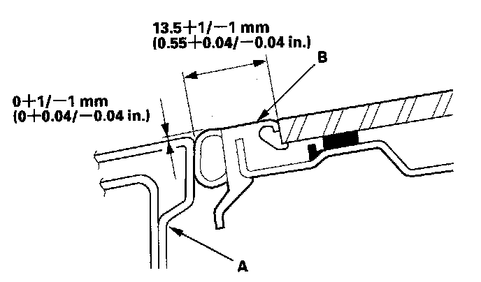
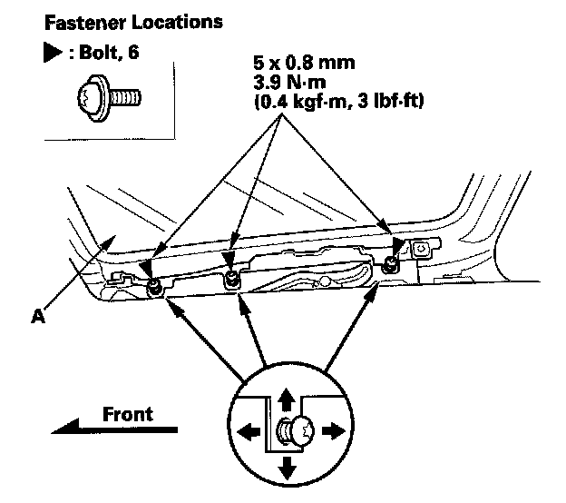

Sunroof / Moonroof: Adjustments
Glass Position Adjustment
The roof panel (A) should be even with the glass weatherstrip (B), to within 0+1/-1 mm (0+0.04/-0.04 in.) all the way around, and should be to length of between the roof panel and glass, to within 13.5+1/-1 mm (0.55+0.04/-0.04 in). If not, make the following adjustment:
1. Remove the bracket cover.

2. Adjust the glass (A).
1. Using a T25 TORX bit, slightly loosen the bolts.
2. Move the glass up or down and forward or rearward.
3. Tighten all bolts securely.
3. If necessary, repeat on the opposite side.